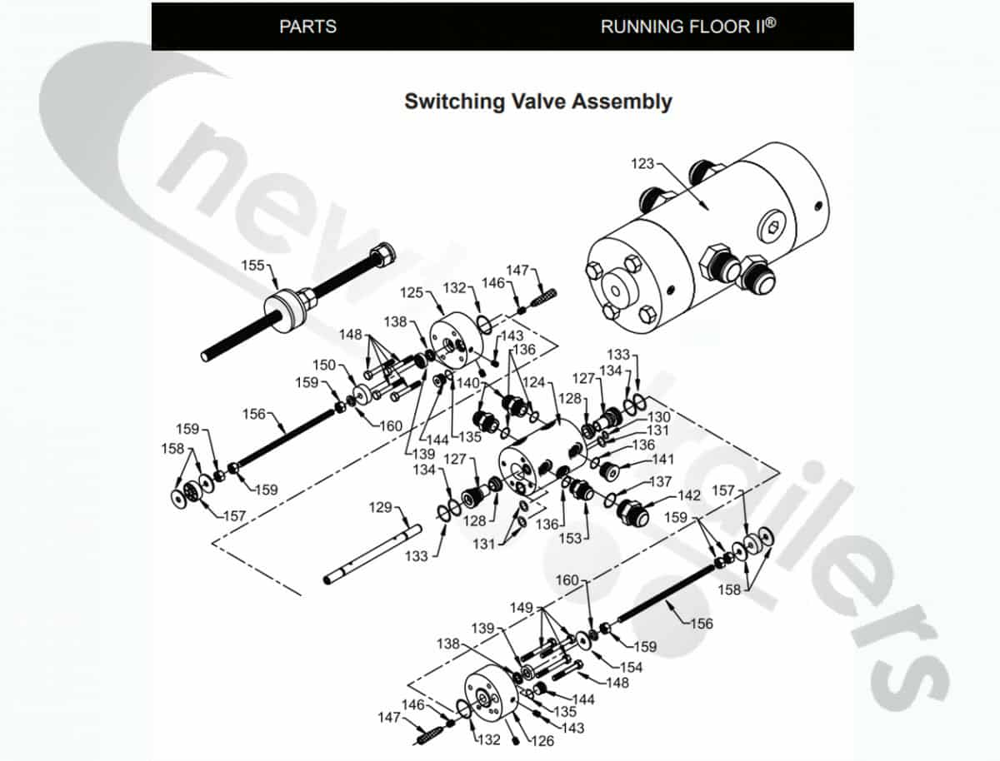
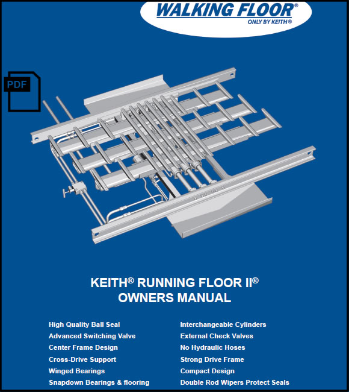

KEITH® RUNNING FLOOR II™
KEITH® RUNNING FLOOR II™ là thế hệ truyền động thủy lực tiên tiến, đóng vai trò "trái tim" của toàn bộ sàn trượt KEITH® WALKING FLOOR® – công nghệ xả hàng tự động được tin dùng toàn cầu. Đây chính là bộ phận then chốt giúp sàn di chuyển nhịp nhàng, bảo đảm quá trình dỡ hàng diễn ra an toàn, nhanh chóng và liên tục, không cần nâng ben.
Vai Trò Trong Hệ Thống Sàn Trượt KEITH®
- Truyền động trung tâm: RUNNING FLOOR II™ cung cấp lực đẩy thủy lực đồng bộ cho các thanh sàn, cho phép cả hệ thống "bước" tuần tự và di chuyển hàng hóa ra ngoài.
- Tối ưu hiệu suất: Giữ cho toàn bộ sàn vận hành mượt mà với tải trọng lớn (35–75 tấn), tốc độ xả đạt tới 3,8 m/phút mà không làm gián đoạn chuỗi cung ứng.
- Bảo vệ kết cấu: Thiết kế chống ăn mòn, ống thép thủy lực và các van dễ bảo trì giúp kéo dài tuổi thọ toàn bộ sàn trượt và giảm thời gian dừng máy.
Ưu Điểm Nổi Bật
- Xả hàng tự động – không cần nâng rơ-moóc: An toàn tuyệt đối trong kho bãi trần thấp hoặc khu vực hạn chế chiều cao.
- Đa dạng ứng dụng: Từ rác thải, nông sản, dăm gỗ đến vật liệu công nghiệp nặng.
- Công nghệ thủy lực mạnh mẽ: 6 xi-lanh chịu áp lực tới 3000 PSI, vận hành ổn định trong mọi điều kiện khắc nghiệt.
- Bảo trì thuận tiện: Cấu trúc modul, van bi và van điều khiển đặt ngoài giúp kiểm tra, thay thế nhanh chóng, giảm chi phí bảo dưỡng.
Lợi Ích Kinh Doanh
- Tăng năng suất vận tải: Dỡ hàng nhanh, rút ngắn thời gian quay đầu xe.
- Giảm chi phí và rủi ro: Loại bỏ nhu cầu nâng ben, hạn chế tai nạn lật xe, tiết kiệm nhân lực.
- Gia tăng giá trị dịch vụ: Mang lại hình ảnh chuyên nghiệp và lợi thế cạnh tranh bền vững cho doanh nghiệp.
KEITH® RUNNING FLOOR II™ – giải pháp truyền động chuẩn mực, mang lại sức mạnh và độ tin cậy cho toàn bộ hệ thống sàn trượt KEITH®.


